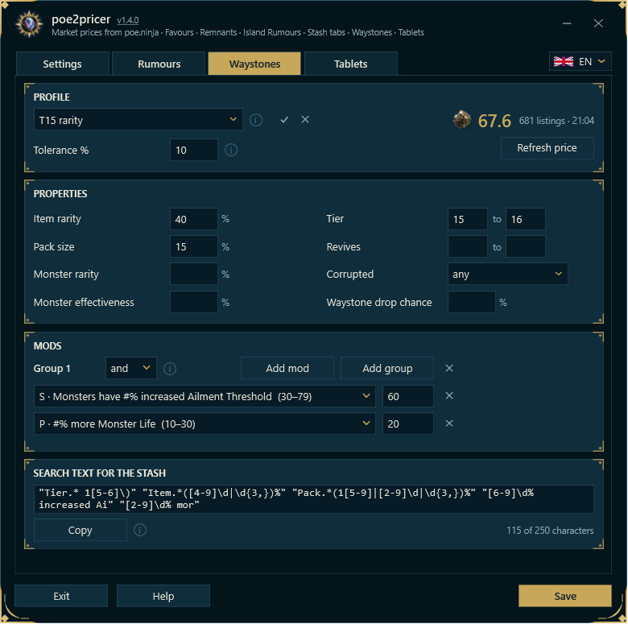
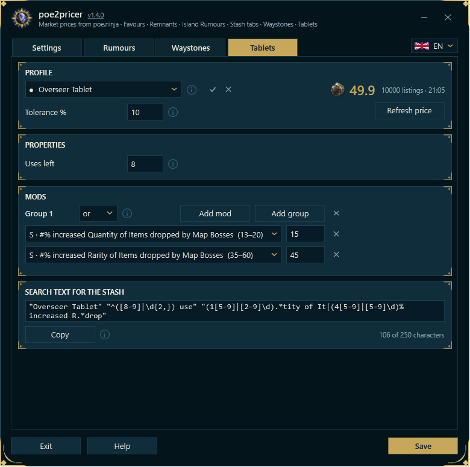
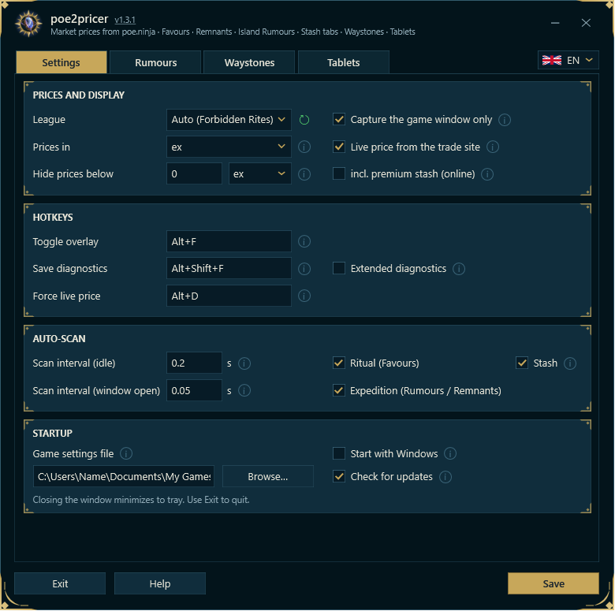

poe2pricer
poe2pricer
Market prices from poe.ninja · Favours · Remnants · Island Rumours · Stash tabs · Waystones · Tablets
Рыночные цены с poe.ninja · Ритуал · Останки · Слухи об островах · Сундук · Путевые камни · Плитки
Marktpreise von poe.ninja · Gaben · Relikte · Inselgerüchte · Truhen-Tabs · Waystones · Tablets
What it does Что делает программаWas es tut
poe2pricer reads the picture of the Path of Exile 2 window and writes prices from poe.ninja next to what it recognises: the Ritual window (Favours), the Expedition remnant list (Runeshape Combinations), the special stash tabs and the Island Rumours panel of the Atlas; and it prices waystones and tablets at their tooltip on the trade site. No key is pressed, nothing is clicked, and nothing about you is sent anywhere: the program only reads the game's picture and draws over it. What it requests: prices from poe.ninja and the item images they refer to from web.poecdn.com, the rumour ratings from Gnejs PoE Tools and a public Google sheet, waystone and tablet prices from the trade site of pathofexile.com (the item's values and mods, nothing else), and once per start the newest release from github.com (can be switched off).
poe2pricer считывает изображение окна Path of Exile 2 и показывает цены с poe.ninja рядом с распознанными предметами: в окне наград Ритуала (Favours), списке останков Экспедиции (Runeshape Combinations) и специальных вкладках сундука. Рядом с панелью слухов об островах на Атласе появляются оценки сообщества. Для путевых камней и плиток программа запрашивает цену на торговой площадке и показывает её у подсказки предмета. Программа не нажимает клавиши и не щёлкает мышью: она считывает изображение игры и рисует поверх него. По сети запрашиваются цены с poe.ninja, изображения предметов с web.poecdn.com, оценки слухов с Gnejs PoE Tools и из открытой Google Таблицы, а также цены путевых камней и плиток с pathofexile.com (передаются значения и модификаторы предмета). При запуске также проверяется последняя версия на github.com; эту проверку можно отключить.
poe2pricer liest das Bild des Fensters von Path of Exile 2 und schreibt Preise von poe.ninja neben das, was es erkennt: das Ritual-Fenster (Gaben), die Relikt-Liste der Expedition (Runenformen-Kombinationen), die besonderen Truhen-Tabs und das Inselgerüchte-Fenster des Atlas; und es bepreist Waystones und Tablets an ihrem Tooltip auf der Trade-Seite. Keine Taste wird gedrückt, nichts geklickt, und nichts über dich wird irgendwohin gesendet: das Programm liest nur das Bild des Spiels und zeichnet darüber. Was es abruft: Preise von poe.ninja und die zugehörigen Gegenstandsbilder von web.poecdn.com, die Gerüchte-Wertungen von Gnejs PoE Tools und einem öffentlichen Google-Sheet, Waystone- und Tablet-Preise von der Trade-Seite von pathofexile.com (die Werte und Mods des Items, sonst nichts), und einmal je Start die neueste Veröffentlichung von github.com (abschaltbar).
Getting started Первый запускErste Schritte
- Run
poe2pricer-app-win-Setup.exe(installs for your user account, installs updates on a click), or unpack the zip anywhere and startpoe2pricer.exe. The installed folder holds the program incurrent, which every update replaces, and a starterpoe2pricer.exebeside it that always starts the current version. - The first start begins with a notice: what the program does and does not do, and that GGG approves no third-party tool; "Run" goes on, "Quit" ends it (see Third-party tools and GGG). Then the program checks whether Windows has its English (United States) text recognition. If it is missing, the program offers to install it: Windows asks for administrator rights and downloads the language feature, which takes 3 to 10 minutes. If Windows has an update waiting for a restart, the program asks you to restart Windows first (Settings → Windows Update → Restart now).
- The first start opens the settings window. Every later start goes straight to the notification area (tray); a click on the tray icon opens the window.
- Start the game. With the automatic scan on (the default), prices appear by themselves as soon as one of the windows opens. Press Alt+F to show or hide them by hand.
- Запустите
poe2pricer-app-win-Setup.exe: он устанавливает программу для текущего пользователя и позволяет устанавливать обновления по нажатию. Либо распакуйте ZIP-архив в любую папку и запуститеpoe2pricer.exe. Установленная программа находится в папкеcurrent, которую заменяет каждое обновление. Рядом расположен файл запускаpoe2pricer.exe, всегда открывающий текущую версию. - Первый запуск начинается с уведомления о том, что программа делает и чего не делает, и о том, что GGG не одобряет сторонние программы. Кнопка «Запустить» продолжает запуск, «Выйти» закрывает программу (см. «Сторонние программы и GGG»). Затем проверяется наличие распознавания английского текста Windows (США). Если компонент отсутствует, программа предложит его установить: Windows запросит права администратора, скачает и установит языковой компонент. Это занимает от 3 до 10 минут. Если для обновления Windows требуется перезагрузка, сначала перезагрузите компьютер через Параметры → Центр обновления Windows → Перезагрузить сейчас.
- При первом запуске открывается окно настроек. При последующих программа запускается в области уведомлений (трее); нажмите на её значок, чтобы открыть окно.
- В правом верхнем углу окна программы выберите RU. Запустите игру. При включённом автосканировании (по умолчанию) цены появляются автоматически при открытии поддерживаемых окон. Сочетание Alt+F показывает или скрывает их вручную.
poe2pricer-app-win-Setup.exeausführen (installiert für dein Benutzerkonto, installiert Updates per Klick), oder das Zip irgendwohin entpacken undpoe2pricer.exestarten. Im installierten Ordner liegt das Programm incurrent, das jedes Update ersetzt, und daneben ein Starterpoe2pricer.exe, der immer die aktuelle Fassung startet.- Der erste Start beginnt mit einem Hinweis: was das Programm tut und nicht tut, und dass GGG kein Drittprogramm freigibt; „Starten“ geht weiter, „Beenden“ beendet es (siehe Drittprogramme und GGG). Dann prüft das Programm, ob Windows seine Texterkennung für Englisch (Vereinigte Staaten) hat. Fehlt sie, bietet das Programm die Installation an: Windows fragt nach Administratorrechten und lädt die Sprachfunktion herunter, das dauert 3 bis 10 Minuten. Wartet Windows auf einen Neustart für ein Update, bittet das Programm erst um den Neustart (Einstellungen → Windows Update → Jetzt neu starten).
- Der erste Start öffnet das Einstellungsfenster. Jeder weitere Start geht direkt in den Infobereich (Tray); ein Klick auf das Tray-Symbol öffnet das Fenster.
- Spiel starten. Mit eingeschaltetem Auto-Scan (Standard) erscheinen die Preise von selbst, sobald eines der Fenster aufgeht. Alt+F zeigt oder versteckt sie von Hand.
Choose your league Выбор лигиLiga wählen
In the settings window, League is set to "Auto (current league)": the newest league poe.ninja lists. Pick another one if you play elsewhere, for example Standard or a hardcore league. In Standard poe.ninja lists no prices for most uniques; they show "?".
В разделе «Настройки → Цены и отображение» для лиги по умолчанию выбрано «Авто (текущая лига)» — последняя лига из списка poe.ninja. Если вы играете в другой лиге, например Standard или хардкорной, выберите её вручную. В Standard у poe.ninja нет цен для большинства уникальных предметов; вместо цены показывается «?».
Im Einstellungsfenster steht Liga auf „Auto (aktuelle Liga)“: die neueste Liga, die poe.ninja führt. Wähle eine andere, wenn du woanders spielst, etwa Standard oder eine Hardcore-Liga. In Standard führt poe.ninja für die meisten Uniques keine Preise; dort steht „?“.
See prices Отображение ценPreise sehen
What the numbers and marks mean Числа, цвета и обозначенияWas Zahlen und Zeichen bedeuten
Prices are in Exalted Orbs (or Chaos, see Settings); from one Divine on they are shown in Divine Orbs with the Divine icon. The colour is the price band, so it follows the exchange rate: grey under 0.02 div, white under 0.2 div, yellow under 1 div, orange from 1 div. The most valuable item of a window is marked in green. Prices are refreshed every few minutes; Refresh prices in the settings window fetches them at once.
Цены отображаются в сферах возвышения (или хаоса — см. настройки), а начиная с одной божественной сферы — в божественных сферах, с соответствующим значком. Цвет зависит от стоимости в божественных сферах и меняется вместе с курсом: серый — ниже 0,02 div, белый — ниже 0,2 div, жёлтый — ниже 1 div, оранжевый — от 1 div. Самый дорогой предмет окна выделен зелёным. Цены обновляются раз в несколько минут; кнопка со значком обновления рядом с выбором лиги в настройках запрашивает их сразу.
Preise stehen in Exalted Orbs (oder Chaos, siehe Einstellungen); ab einem Divine in Divine Orbs mit Divine-Symbol. Die Farbe ist die Preisstufe und folgt dem Kurs: grau unter 0,02 div, weiß unter 0,2 div, gelb unter 1 div, orange ab 1 div. Der wertvollste Gegenstand eines Fensters ist grün markiert. Preise werden alle paar Minuten aktualisiert; Preisupdate im Einstellungsfenster holt sie sofort.
| Mark | Meaning |
|---|---|
? | Recognised, but poe.ninja lists no price for it. |
< | Below your price floor. |
! (red) | A greyed-out omen whose kind cannot be told from its symbol alone. Put the mouse or the controller cursor on it: the program reads its tooltip, and the price follows. |
▲ ▼ | In the remnant list: the best reward is scrolled out of view in that direction. |
… – ⏳ | At a waystone's or tablet's tooltip: the price is being asked, no listing, the trade site busy (see Waystones). |
| Знак | Значение |
|---|---|
? | Предмет распознан, но у poe.ninja нет цены. |
< | Цена ниже заданного порога. |
! (красный) | Затемнённое знамение, тип которого нельзя определить по одному значку. Наведите мышь или курсор контроллера: программа прочитает подсказку и покажет цену. |
▲ ▼ | В списке останков: самая дорогая награда находится за пределами видимой части в указанном направлении. |
… – ⏳ | У подсказки путевого камня или плитки: идёт запрос цены; предложений нет; торговая площадка занята или недоступна (см. «Путевые камни»). |
| Zeichen | Bedeutung |
|---|---|
? | Erkannt, aber poe.ninja führt keinen Preis dafür. |
< | Unter deiner Preisschwelle. |
! (rot) | Ein ausgegrautes Omen, dessen Art sich am Symbol allein nicht erkennen lässt. Maus oder Controller-Cursor darauf: das Programm liest den Tooltip, und der Preis folgt. |
▲ ▼ | In der Relikt-Liste: die beste Belohnung liegt in dieser Richtung außerhalb des Sichtbereichs. |
… – ⏳ | Am Tooltip eines Waystones oder Tablets: der Preis wird gefragt, kein Angebot, die Trade-Seite ausgelastet (siehe Waystones). |
Ritual window (Favours) Награды Ритуала (Favours)Ritual-Fenster (Gaben)
Every item in the grid gets its price; the most valuable one is marked. Items under a tooltip or a notification are left alone until it is gone. Prices below your price floor show a grey "<" instead of a number.
Рядом с каждым предметом в сетке появляется цена; самый дорогой выделен. Предметы под подсказкой или уведомлением не оцениваются, пока перекрытие не исчезнет. Если цена ниже заданного порога, вместо числа показывается серый знак «<».
Jeder Gegenstand im Raster bekommt seinen Preis; der wertvollste ist markiert. Gegenstände unter einem Tooltip oder einer Meldung bleiben frei, bis sie weg ist. Preise unter deiner Schwelle zeigen ein graues „<“ statt einer Zahl.

Expedition remnant list (Runeshape Combinations) Список останков Экспедиции (Runeshape Combinations)Relikt-Liste der Expedition (Runenformen-Kombinationen)
Every reward row gets the price of the whole row: "3x Exalted Orb" is priced as three. When the best reward is scrolled out of view, an arrow at the edge of the list points to it. Skill rows ("Skill Level 20: …") have no market and get no price. Rows below the price floor show nothing.
Для каждой строки наград показывается стоимость всей строки: «3x Exalted Orb» оценивается как три сферы возвышения. Если самая дорогая награда скрыта прокруткой, стрелка у края списка указывает на неё. Строки умений («Skill Level 20: …») не продаются и не получают цену. Строки дешевле заданного порога остаются без подписи.
Jede Belohnungszeile bekommt den Preis der ganzen Zeile: „3x Exalted Orb“ zählt dreifach. Ist die beste Belohnung aus dem Sichtbereich gescrollt, zeigt ein Pfeil am Rand der Liste dorthin. Skill-Zeilen („Skill Level 20: …“) haben keinen Markt und bekommen keinen Preis. Zeilen unter der Schwelle zeigen nichts.

Special stash tabs Специальные вкладки сундукаBesondere Truhen-Tabs
Orbs, essences, breach, delirium, expedition, ritual, abyss, tablets and socketables: every filled slot gets the price per item. A slot below the price floor shows a grey "<".
Сферы, сущности, Разлом, Делириум, Экспедиция, Ритуал, Бездна, плитки и вставляемые предметы: у каждой занятой ячейки показывается цена за один предмет. Если она ниже порога, появляется серый знак «<».
Orbs, Essenzen, Breach, Delirium, Expedition, Ritual, Abyss, Tablets und Sockelbares: jedes belegte Feld bekommt den Preis je Stück. Ein Feld unter der Schwelle zeigt ein graues „<“.

Waystones Путевые камниWaystones
The Waystones tab of the program window holds your waystone profiles. A profile says what a waystone must have. From it come three things: a search text for the stash search of the game, the profile's price on the trade site, and the words in which the live price at a waystone's tooltip is asked.
На вкладке «Путевые камни» хранятся профили с нужными характеристиками камней. Профиль используется для трёх задач: создания строки поиска для сундука в игре, запроса цены профиля на торговой площадке и выбора условий для цены у подсказки путевого камня.
Der Tab Waystones des Programmfensters hält deine Waystone-Profile. Ein Profil sagt, was ein Waystone haben muss. Daraus entstehen drei Dinge: ein Suchtext für die Stash-Suche des Spiels, der Preis des Profils auf der Trade-Seite, und die Worte, in denen der Live-Preis am Tooltip eines Waystones gefragt wird.

Profiles ПрофилиProfile
- Pick a profile from the list, or type a new name into it to start one.
- ✓ saves the profile (on its own, the other settings are not touched); Save at the foot saves it together with everything else. ✕ removes it; when the last one goes, an empty "default" is left.
- Choosing another profile, or Exit, while the one shown has changes not saved asks: Save, Discard (back to the saved state) or Cancel (stay). Changing tabs does not ask; the changes stay in the tab.
- Tolerance %, under the list, lowers the values the live price asks for by that much, so that enough listings are found, and lets a value that much under a minimum count as met.
- Выберите профиль из списка или введите новое имя, чтобы создать его.
- ✓ сохраняет только профиль; кнопка «Сохранить» внизу окна сохраняет его вместе с остальными настройками. ✕ удаляет профиль. После удаления последнего остаётся пустой профиль «default».
- Если при переключении профиля или нажатии «Выйти» есть несохранённые изменения, появятся варианты: «Сохранить», «Не сохранять» (вернуться к сохранённому состоянию) и «Отмена» (остаться). Переключение вкладок не вызывает вопроса: изменения остаются на вкладке.
- «Допуск, %» уменьшает значения, используемые для поиска цены у подсказки, на указанный процент, чтобы найти больше предложений. Значение ниже минимума профиля в пределах этого допуска тоже считается подходящим.
- Wähle ein Profil aus der Liste, oder tippe einen neuen Namen hinein, um eines anzulegen.
- ✓ speichert das Profil (für sich, die übrigen Einstellungen bleiben unberührt); Speichern im Fuß speichert es zusammen mit allem anderen. ✕ löscht es; geht das letzte, bleibt ein leeres „default“.
- Wählst du ein anderes Profil oder Beenden, während das gezeigte ungespeicherte Änderungen hat, fragt das Programm: Speichern, Verwerfen (zurück zum gespeicherten Stand) oder Abbrechen (bleiben). Ein Wechsel des Tabs fragt nicht; die Änderungen bleiben im Tab.
- Toleranz %, unter der Liste, senkt die Werte, nach denen der Live-Preis fragt, um so viel Prozent, damit genug Angebote gefunden werden, und lässt einen Wert, der so viel unter einem Mindestwert liegt, noch als erfüllt gelten.
Properties СвойстваItem-Eigenschaften
Item rarity, pack size, monster rarity, monster effectiveness and waystone drop chance are each "at least". Tier and revives take a range ("15 to 16"; one side may stay empty). Corrupted: any, yes or no. An empty field asks nothing.
Редкость предметов, размер групп, редкость и эффективность монстров, а также выпадение камней задают минимальные значения. Для уровня и возрождений можно указать диапазон, например «15 до 16»; одну из границ можно оставить пустой. Осквернение: любое, осквернён или не осквернён. Пустое поле не добавляет условия.
Item Rarity, Pack Size, Monster Rarity, Monster Effectiveness und Waystone Drop Chance gelten jeweils als „mindestens“. Stufe und Revives nehmen einen Bereich („15 bis 16“; eine Seite darf leer bleiben). Corrupted: egal, ja oder nein. Ein leeres Feld fragt nichts.
Mods in groups Группы модификаторовMods in Gruppen
Mods stand in groups, as in the stat filters of the trade site. Each group has its kind in its head:
Модификаторы объединяются в группы, как фильтры характеристик на торговой площадке. В заголовке группы выбирается правило:
Mods stehen in Gruppen, wie bei den Stat-Filtern der Trade-Seite. Jede Gruppe hat ihre Art im Kopf:
| Kind | The waystone must have |
|---|---|
| and | every mod of the group, each at least its value |
| or | at least one mod of the group |
| not | none of the group's mods (no value field) |
| Правило | Что требуется от путевого камня |
|---|---|
| и | Все модификаторы группы, каждый — не ниже своего значения. |
| или | Хотя бы один модификатор группы. |
| не | Ни одного модификатора группы; поле значения не используется. |
| Art | Der Waystone muss haben |
|---|---|
| und | jeden Mod der Gruppe, jeden mindestens mit seinem Wert |
| oder | mindestens einen Mod der Gruppe |
| nicht | keinen der Mods der Gruppe (kein Wertfeld) |
- All groups must hold at once. Group 1 is "and"; Add group puts an "or" group right after its own, with its first row; the kind can be changed in the group's head.
- Add mod adds a row to the group; ✕ removes a row or a group. A group holds up to eight mods (a waystone carries eight), a tablet's four.
- Typing into a row narrows its list to the mods that contain the text. A mod chosen in a group is not offered again in that group (a line stands on an item once); another group may name it again.
- The value field: the least value; empty, it shows the span the mod rolls.
- Условия всех групп должны выполняться одновременно. Первая группа использует правило «и». Кнопка «Добавить группу» создаёт сразу после текущей группу «или» с первой строкой; правило можно изменить в заголовке.
- «Добавить мод.» добавляет строку в группу; ✕ удаляет строку или группу. В группе путевого камня может быть до восьми модификаторов, плитки — до четырёх.
- Начните вводить текст в строке, чтобы отфильтровать список модификаторов. Уже выбранный модификатор не предлагается повторно в той же группе, но может использоваться в другой.
- В поле значения задаётся минимум. Если оно пустое, показывается возможный диапазон значений модификатора.
- Alle Gruppen müssen zugleich gelten. Gruppe 1 ist „und“; Neue Gruppe setzt eine „oder“-Gruppe direkt hinter die eigene, mit ihrer ersten Zeile; die Art lässt sich im Kopf der Gruppe ändern.
- Neuer Mod fügt der Gruppe eine Zeile hinzu; ✕ entfernt eine Zeile oder eine Gruppe. Eine Gruppe fasst bis zu acht Mods (ein Waystone trägt acht), beim Tablet vier.
- Tippen in eine Zeile engt ihre Liste auf die Mods ein, die den Text enthalten. Ein Mod, der in einer Gruppe gewählt ist, wird in dieser Gruppe nicht noch einmal angeboten (eine Zeile steht einmal auf einem Item); eine andere Gruppe darf ihn wieder nennen.
- Das Wertfeld: der kleinste Wert; leer zeigt es die Spanne, die der Mod würfelt.
Example: group 1 "and" with more Monster Life ≥ 20; group 2 "or" with Ailment Threshold ≥ 60 and Stun Threshold ≥ 60; group 3 "not" with Ignited Ground. That is: more life, at least one of the two thresholds, and no ignited ground.
Пример: в группе «и» — more Monster Life ≥ 20; в группе «или» — Ailment Threshold ≥ 60 и Stun Threshold ≥ 60; в группе «не» — Ignited Ground. Это означает: больше здоровья монстров, хотя бы один из двух порогов и отсутствие горящей земли. Названия в списке модификаторов следуют языку игры.
Beispiel: Gruppe 1 „und“ mit more Monster Life ≥ 20; Gruppe 2 „oder“ mit Ailment Threshold ≥ 60 und Stun Threshold ≥ 60; Gruppe 3 „nicht“ mit Ignited Ground. Das heißt: mehr Leben, mindestens eine der beiden Schwellen, und kein entzündeter Boden.
Search text for the stash Строка поиска для сундукаSuchtext für den Stash
Copy puts it on the clipboard; paste it into the search box of a stash tab, and the waystones that match the profile light up. It is written in the words of your game client (English or German). The game's search box takes 250 characters; the counter under the text says how many are used, and a text that is too long is marked.
Нажмите «Копировать» и вставьте текст в поле поиска вкладки сундука: камни, соответствующие профилю, подсветятся. Строка формируется на языке клиента игры (английском или немецком). Поиск в игре допускает 250 символов; счётчик под строкой показывает использованное количество, слишком длинная строка отмечается.
Kopieren legt ihn in die Zwischenablage; füge ihn in das Suchfeld eines Stash-Tabs ein, und die Waystones, die zum Profil passen, leuchten auf. Er steht in den Worten deines Spielclients (Englisch oder Deutsch). Das Suchfeld des Spiels nimmt 250 Zeichen; der Zähler unter dem Text sagt, wie viele belegt sind, und ein zu langer Text wird markiert.
The profile's price Цена профиляPreis des Profils
Refresh price asks the trade site of pathofexile.com for the cheapest waystone the profile describes; the answer shows the price, the number of listings and the time it was asked. Before that an Exalted Orb and "→ Refresh price" stand there: nothing is asked by itself (the trade site's limit is shared with the live price in the game). An asked price is kept for the profile while the program runs. Counted are Instant Buyout listings, and with "incl. premium stash (online)" in Settings → Prices and display also those of sellers who are online; offline sellers never. With four or more listings the second cheapest counts, so that one price fixer does not.
Кнопка «Узнать цену» запрашивает на pathofexile.com самые дешёвые путевые камни, соответствующие профилю. Показываются цена, число предложений и время запроса. До запроса стоит подсказка «→ Узнать цену»: автоматически цена профиля не запрашивается, поскольку лимит площадки используется и для цен в игре. Полученная цена хранится у профиля до завершения работы программы. По умолчанию учитывается мгновенный выкуп (Instant Buyout), а с настройкой «Учитывать премиум-вкладки (онлайн)» в разделе «Цены и отображение» — также премиум-вкладки продавцов онлайн. Предложения премиум-вкладок продавцов не в сети не учитываются. При четырёх и более предложениях берётся вторая по дешевизне цена, чтобы одиночное заниженное предложение меньше влияло на результат.
Preis abfragen fragt die Trade-Seite von pathofexile.com nach dem günstigsten Waystone, den das Profil beschreibt; die Antwort zeigt den Preis, die Zahl der Angebote und die Uhrzeit der Abfrage. Vorher stehen dort ein Exalted Orb und „→ Preis abfragen“: von selbst wird nichts gefragt (die Grenze der Trade-Seite teilt sich der Preis mit dem Live-Preis im Spiel). Ein abgefragter Preis bleibt beim Profil, solange das Programm läuft. Es zählen Sofortkauf-Angebote, mit „inkl. Premium-Stash (online)“ in Einstellungen → Preise und Anzeige auch die von Verkäufern, die online sind; Verkäufer offline nie. Ab vier Angeboten zählt das zweitgünstigste, damit ein einzelner Preisdrücker nicht zählt.
Live price at the tooltip Цена у подсказки предметаLive-Preis am Tooltip
Switched on in Settings → Prices and display ("Live price from the trade site", one switch for waystones and tablets), the program reads the tooltip of the waystone under your mouse or cursor (in a stash tab, the inventory, anywhere) and writes its price at the right end of the title bar. The "Stash" switch of the automatic scan covers the tooltips as well; with it off, Alt+F shows them.
Включите «Цена с торговой площадки в подсказке» в разделе «Настройки → Цены и отображение» — переключатель общий для путевых камней и плиток. Программа прочитает подсказку предмета под мышью или курсором (в сундуке, инвентаре или другом месте) и покажет цену справа в заголовке. Переключатель автосканирования «Сундук» действует и для этих подсказок; если он выключен, используйте Alt+F.
In Einstellungen → Preise und Anzeige eingeschaltet („Live-Preis von der Trade-Seite“, ein Schalter für Waystones und Tablets), liest das Programm den Tooltip des Waystones unter Maus oder Cursor (im Stash-Tab, im Inventar, überall) und schreibt seinen Preis rechts an die Titelleiste. Der Schalter „Truhe“ des Auto-Scans gilt auch für die Tooltips; ist er aus, zeigt Alt+F sie.

| At the title bar | Meaning |
|---|---|
| a price | The cheapest listing of a waystone like this one (counted as above). |
… | The trade site is being asked. |
– | No listing. Asked again after a while. |
⏳ | Not asked: the trade site is busy or not reachable; the status line says how long until it is asked again. |
| В заголовке | Значение |
|---|---|
| Цена | Оценка по самым дешёвым предложениям похожих камней с учётом правил выше. |
… | Идёт запрос к торговой площадке. |
– | Предложений нет. Через некоторое время запрос повторится. |
⏳ | Запрос отложен: площадка занята или недоступна. В строке состояния указано время до повторной попытки. |
| An der Titelleiste | Bedeutung |
|---|---|
| ein Preis | Das günstigste Angebot eines Waystones wie dieses (gezählt wie oben). |
… | Die Trade-Seite wird gefragt. |
– | Kein Angebot. Nach einer Weile wird neu gefragt. |
⏳ | Nicht gefragt: die Trade-Seite ist ausgelastet oder nicht erreichbar; die Statuszeile sagt, wann neu gefragt wird. |
The price takes a moment: the trade site allows a few requests in ten seconds, and the program keeps under that. An answer is kept for ten minutes: the same waystone shown again within that time is not asked anew. After a failure of the site (not reachable, an error page) the program waits a minute before it asks again, twice as long after each further failure, ten minutes at most. Alt+D ("Force live price") asks for the waystone under the mouse exactly as it is, past the profiles, also while the live price is switched off. When nothing of a tooltip could be read (no value, no mod), no price is asked; the status line says "tooltip text not read".
Цена появляется с задержкой: торговая площадка разрешает лишь несколько запросов за десять секунд, и программа соблюдает лимит. Ответ хранится десять минут; повторное наведение на тот же камень в этот срок не создаёт новый запрос. После сбоя площадки программа ждёт минуту, после каждого следующего — вдвое дольше, максимум десять минут. Alt+D («Запросить точную цену») запрашивает камень по всем его значениям и модификаторам, без профилей, даже если автоматическая цена у подсказки выключена. Если не удалось прочитать ни значения, ни модификаторы, цена не запрашивается; в строке состояния появляется сообщение «не удалось прочитать подсказку».
Der Preis braucht einen Moment: Die Trade-Seite erlaubt wenige Anfragen in zehn Sekunden, und das Programm bleibt darunter. Eine Antwort wird zehn Minuten aufgehoben: derselbe Waystone, in dieser Zeit noch einmal gezeigt, wird nicht neu gefragt. Nach einem Ausfall der Seite (nicht erreichbar, eine Fehlerseite) wartet das Programm eine Minute, bevor es wieder fragt, nach jedem weiteren Ausfall doppelt so lange, höchstens zehn Minuten. Alt+D („Live-Preis erzwingen“) fragt den Waystone unter der Maus exakt so, wie er ist, an den Profilen vorbei, auch bei ausgeschaltetem Live-Preis. Konnte vom Tooltip nichts gelesen werden (kein Wert, kein Mod), wird nicht gefragt; die Statuszeile sagt „Tooltip-Text nicht gelesen“.
How the question is formed Как формируется запросWie die Frage entsteht
The profile says what is asked about, the waystone gives the numbers. With several profiles saved, the one the waystone has most in common with (the most conditions met; an "or" group counts as one; the one in use in the tab on a tie) sets the question: the properties and mods it names, each with the waystone's own value lowered by the tolerance. A wanted mod the waystone lacks, or an excluded mod it has, is left out, so the price is that of this waystone, not a better one. Without a profile, or when nothing of the profile is left for this waystone, it is asked for exactly as it is, every value and every mod; that finds fewer listings, and a strong waystone may find none ("–").
Профиль определяет, какие свойства и модификаторы учитывать, а путевой камень задаёт их значения. Из сохранённых профилей выбирается тот, у которого больше выполненных условий; группа «или» считается одним условием, при равенстве приоритет у выбранного на вкладке профиля. Для указанных свойств и модификаторов берутся значения самого камня, уменьшенные на допуск. Желаемый модификатор, которого на камне нет, или запрещённый модификатор, который на нём есть, не включается в запрос: оценивается этот камень, а не его улучшенный вариант. Без профиля, либо если ни одно его условие не применимо, запрашиваются все значения и модификаторы камня. Такой точный запрос находит меньше предложений; для сильного камня их может не оказаться («–»).
Das Profil sagt, wonach gefragt wird, der Waystone liefert die Zahlen. Sind mehrere Profile gespeichert, bestimmt das mit den meisten Gemeinsamkeiten (die meisten erfüllten Bedingungen; eine „oder“-Gruppe zählt als eine; bei Gleichstand das im Tab gewählte) die Frage: die Eigenschaften und Mods, die es nennt, jeweils mit dem eigenen Wert des Waystones, um die Toleranz gesenkt. Ein gewünschter Mod, den der Waystone nicht hat, oder ein ausgeschlossener, den er hat, bleibt weg; der Preis ist also der dieses Waystones, nicht der eines besseren. Ohne Profil, oder wenn vom Profil für diesen Waystone nichts übrig bleibt, wird er exakt gefragt, wie er ist, jeder Wert und jeder Mod; das findet weniger Angebote, und ein starker Waystone findet womöglich keines („–“).
German game client Немецкий клиент игрыDeutscher Spielclient
Waystone and tablet tooltips are read in English and in German, with Alt held (the title in English) or without. In a German client the search text, the mod lists and the kinds of tablets in the program window are German; a profile keeps the English names of its mods and holds in both languages.
Подсказки путевых камней и плиток читаются на английском и немецком — с зажатой Alt (английское название) или без неё. В немецком клиенте строки поиска, списки модификаторов и типы плиток в программе будут немецкими. Профиль сохраняет английские названия модификаторов и работает с обоими поддерживаемыми языками игры. Выбор RU в программе не меняет язык распознавания.
Waystone- und Tablet-Tooltips werden auf Englisch und auf Deutsch gelesen, mit gedrückter Alt-Taste (der Titel englisch) oder ohne. Im deutschen Client sind Suchtext, Mod-Listen und Tablet-Arten im Programmfenster deutsch; ein Profil behält die englischen Namen seiner Mods und gilt in beiden Sprachen.
Nothing is sent to the game for this: the tooltip is read from the picture like every other window. The trade site is asked without an account or session; a request holds the profile's or the item's values and mods, nothing about you.
Для этого программа ничего не отправляет в игру: подсказка считывается из изображения окна, как и остальные окна. Торговая площадка запрашивается без учётной записи и игровой сессии; запрос содержит значения и модификаторы профиля или предмета.
Dafür wird nichts ins Spiel gesendet: der Tooltip wird wie jedes andere Fenster aus dem Bild gelesen. Die Trade-Seite wird ohne Konto oder Sitzung gefragt; eine Anfrage enthält die Werte und Mods des Profils oder des Items, nichts über dich.
Tablets ПлиткиTablets
The Tablets tab works like the Waystones tab, with one profile per kind of tablet: pick the kind (Breach, Expedition, Delirium, Ritual, Irradiated, Overseer, Abyss, Temple) and the fields below belong to it. A kind with a profile is marked "●" in the list. ✓ saves the kind's profile; ✕ clears its fields, and tablets of that kind are then asked for exactly as they are.
Вкладка «Плитки» устроена так же, как «Путевые камни», но для каждого типа есть один профиль. Выберите тип (Breach, Expedition, Delirium, Ritual, Irradiated, Overseer, Abyss, Temple); поля ниже относятся к нему. Типы с профилем отмечены в списке символом «●». ✓ сохраняет профиль, ✕ очищает поля; после очистки плитки этого типа оцениваются по точным собственным параметрам.
Der Tab Tablets arbeitet wie der Tab Waystones, mit einem Profil je Art: wähle die Art (Breach, Expedition, Delirium, Ritual, Irradiated, Overseer, Abyss, Temple), und die Felder darunter gehören zu ihr. Eine Art mit Profil ist in der Liste mit „●“ markiert. ✓ speichert das Profil der Art; ✕ leert ihre Felder, und Tablets dieser Art werden dann exakt gefragt, wie sie sind.

- Uses left (under Properties): a tablet starts with 10 uses and loses one per map; the profile asks for at least this many.
- Mods: the lines every tablet can carry and the lines only this kind rolls, in groups as for waystones, up to four per group.
- Search text: the kind by name, the uses, the mods.
- Price: the cheapest tablet of the kind the profile describes (no uniques), asked with "Refresh price", counted as for waystones.
- Live price at the tooltip: as for waystones; the tablet's kind chooses the profile, a kind without one is asked for exactly as the tablet is.
- On an Overseer Tablet, "an additional Essence" (or Shrine) and "# additional Essences" (or Shrines) read alike at 1; a profile that names one is asked for either.
- «Осталось применений» в разделе «Свойства»: у новой плитки 10 применений, на каждой карте расходуется одно. Профиль задаёт минимум оставшихся применений.
- Модификаторы: общие для всех плиток и доступные только выбранному типу. Группы работают так же, как у путевых камней; не более четырёх модификаторов в группе.
- Строка поиска учитывает название типа, применения и модификаторы.
- Цена запрашивается кнопкой «Узнать цену» по самым дешёвым плиткам нужного типа и профиля (без уникальных). Правила расчёта те же, что для путевых камней.
- Цена у подсказки работает так же, как у путевых камней. Профиль выбирается по типу плитки; без профиля используются точные параметры предмета.
- У Overseer Tablet строки «an additional Essence» (или Shrine) и «# additional Essences» (или Shrines) при значении 1 читаются одинаково. Если профиль содержит один вариант, поиск учитывает оба.
- Nutzungen übrig (unter Item-Eigenschaften): ein Tablet beginnt mit 10 Nutzungen und verliert eine je Map; das Profil fragt nach mindestens so vielen.
- Mods: die Zeilen, die jedes Tablet tragen kann, und die, die nur diese Art würfelt, in Gruppen wie bei Waystones, bis zu vier je Gruppe.
- Suchtext: die Art beim Namen, die Nutzungen, die Mods.
- Preis: das günstigste Tablet der Art, das das Profil beschreibt (keine Uniques), abgefragt mit „Preis abfragen“, gezählt wie bei Waystones.
- Live-Preis am Tooltip: wie bei Waystones; die Art des Tablets wählt das Profil, eine Art ohne Profil wird exakt gefragt, wie das Tablet ist.
- Auf einem Overseer Tablet lesen sich „an additional Essence“ (oder Shrine) und „# additional Essences“ (oder Shrines) bei 1 gleich; ein Profil, das eines davon nennt, fragt nach beiden.

Island Rumours Слухи об островахInselgerüchte
On the Atlas, the Island Rumours panel of an uncharted island lists the rumours of the island. poe2pricer shows a table beside the panel as soon as it has come to rest: for each rumour its island, its mods, the community tier (S+ to F) and a note. The ratings and notes come from Gnejs PoE Tools (tiers and notes by Jestra1220) and are loaded at run time; the settings window shows the source and when it was updated.
Панель Island Rumours на Атласе показывает слухи о неисследованном острове. Когда панель перестаёт двигаться, poe2pricer выводит рядом таблицу: остров, модификаторы, ранг сообщества (от S+ до F) и заметку для каждого слуха. Ранги и заметки поступают с Gnejs PoE Tools (автор оценок и заметок — Jestra1220) во время работы программы. Источник и время обновления видны в настройках. Эти данные сообщества сохраняют исходный язык.
Im Atlas listet das Inselgerüchte-Fenster einer unerforschten Insel ihre Gerüchte. poe2pricer zeigt neben dem Fenster eine Tabelle, sobald es zur Ruhe gekommen ist: je Gerücht die Insel, die Mods, die Community-Wertung (S+ bis F) und eine Notiz. Wertungen und Notizen kommen von Gnejs PoE Tools (Wertungen und Notizen von Jestra1220) und werden zur Laufzeit geladen; das Einstellungsfenster zeigt Quelle und Stand.

The panel shows three rumours at a time; moving an item in the inventory rolls them anew, and the panel closes and opens again. poe2pricer recognises the island by the sea chart around its ship marker and collects the rumours over the rolls (opening the panel again without moving anything shows the same three and counts as no roll): under the table stands the expedition tier of the island with the number of rumours seen and of rolls, below it the rumours seen before that the panel does not show now, and a rumour shown for the first time at this island is marked new. The expedition tier is the mean of the tiers of all rumours seen there (your own tiers first), given as the highest tier that mean reaches. Fewer than three rumours on the panel means the island has no more: complete; with three, the card reminds you to move an item for more. The collection lasts while the program runs; an island worth remembering is bookmarked in the game. A limit: dragging or zooming the Atlas between two openings, or switching between keyboard and controller, can leave too little of the chart in common — the Atlas is drawn in perspective, a moved map shows the same island distorted differently — and the program starts a new collection for the same island; opening the panel without moving the Atlas is always recognised.
Панель показывает по три слуха. Перемещение предмета в инвентаре обновляет их: панель закрывается и открывается снова. poe2pricer узнаёт остров по морской карте вокруг значка корабля и собирает слухи между обновлениями. Если просто переоткрыть панель без перемещения предмета, останутся те же три слуха — это не считается обновлением. Под таблицей показывается ранг экспедиции, количество увиденных слухов и обновлений. Ниже перечисляются ранее увиденные слухи, которых сейчас нет на панели; впервые увиденный на этом острове слух отмечается как новое. Ранг экспедиции рассчитывается по среднему весу всех увиденных слухов, с приоритетом ваших оценок; показывается высший ранг, порога которого достигает средний вес. Меньше трёх слухов на панели означает собрано всё; при трёх программа напоминает переместить предмет для продолжения. Сбор действует до завершения программы; интересный остров лучше отметить в игре. Перемещение или масштабирование Атласа, а также смена клавиатуры на контроллер могут изменить вид карты настолько, что программа начнёт новый сбор для того же острова. Если Атлас не двигать, повторное открытие панели распознаётся.
Das Fenster zeigt drei Gerüchte auf einmal; wer einen Gegenstand im Inventar verschiebt, würfelt sie neu, das Fenster schließt und öffnet sich wieder. poe2pricer erkennt die Insel an der Seekarte um ihr Schiffssymbol und sammelt die Gerüchte über die Würfe hinweg (wer das Fenster nur schließt und wieder öffnet, ohne etwas zu verschieben, sieht dieselben drei; das zählt nicht als Wurf): unter der Tabelle steht das Expeditionstier der Insel mit der Zahl der gesehenen Gerüchte und der Würfe, darunter die früher gesehenen Gerüchte, die das Fenster gerade nicht zeigt, und ein Gerücht, das auf dieser Insel zum ersten Mal erscheint, ist mit neu markiert. Das Expeditionstier ist das Mittel der Wertungen aller dort gesehenen Gerüchte (eigene Wertungen zuerst), angegeben als höchste Stufe, die dieses Mittel erreicht. Weniger als drei Gerüchte im Fenster heißt, die Insel hat nicht mehr: vollständig; bei dreien erinnert die Karte daran, für mehr einen Gegenstand zu verschieben. Die Sammlung gilt, solange das Programm läuft; eine Insel, die man sich merken will, bookmarkt man im Spiel. Eine Grenze: Wer den Atlas zwischen zwei Öffnungen verschiebt oder zoomt oder zwischen Tastatur und Controller wechselt, lässt der Karte womöglich zu wenig Gemeinsames — der Atlas ist perspektivisch gezeichnet, eine verschobene Karte zeigt dieselbe Insel anders verzerrt —, und das Programm beginnt für dieselbe Insel eine neue Sammlung; Öffnen ohne Bewegen des Atlas wird immer erkannt.
The Rumours tab of the settings window lists the community table. There you can give a rumour your own tier and a note; your own tier overrides the community tier and is marked with * in the game. Rumours the table does not know can be added with "+ Add custom row". Below the table stand the weights of the tiers for the expedition tier (S+ 6 … F 1 to begin with). Everything is applied on Save.
Вкладка «Слухи» показывает таблицу сообщества. Здесь можно назначить свой ранг и заметку. Свой ранг заменяет ранг сообщества и отмечается в игре символом *. Слух, которого нет в таблице, можно добавить кнопкой «+ Добавить свою строку». Под таблицей задаются веса рангов для оценки экспедиции (по умолчанию от S+ = 6 до F = 1). Изменения применяются после нажатия «Сохранить».
Der Tab Gerüchte des Einstellungsfensters zeigt die Community-Tabelle. Dort kannst du einem Gerücht eine eigene Wertung und eine Notiz geben; die eigene Wertung geht der Community-Wertung vor und ist im Spiel mit * markiert. Gerüchte, die die Tabelle nicht kennt, lassen sich mit „+ Eigene Zeile hinzufügen“ anlegen. Unter der Tabelle stehen die Gewichte der Stufen für das Expeditionstier (anfangs S+ 6 … F 1). Alles gilt nach Speichern.
Settings НастройкиEinstellungen

| Setting | What it does |
|---|---|
| League | Which league's prices are shown. "Auto" follows the current league. |
| Prices in | The unit prices are written in below one Divine Orb: Exalted (standard) or Chaos, for late in a league when exalts are cheap. From one Divine on prices are always in Divine. |
| Hide prices below | The price floor, in Exalted, Chaos or Divine Orbs. Applies to Favours, remnant rewards (value of the whole row) and stash tabs (price per item). Does not affect the mark on the best item. |
| Capture the game window only | On (standard): the game is read from its own window, and recording software (NVIDIA app, OBS, Game Bar) can record the desktop and shows the prices. Needs Windows 11; on Windows 10 the screen is read. Off: the screen is read and the prices stay out of every recording, as up to 1.2.0. Reading the window is also the cheaper way. When the window gives no picture (or a black one while the screen shows the game), the program reads the screen by itself, with a line in the window. |
| Live price from the trade site | Prices the waystone or tablet under the mouse or cursor at its tooltip (see Waystones). One switch for both. |
| incl. premium stash (online) | Which trade listings count for every waystone and tablet price: by default only Instant Buyout; ticked, also items in premium stash tabs whose seller is online. Offline sellers never count. |
| Hotkeys | "Toggle overlay", "Save diagnostics" and "Force live price". Click a field, then press the key or combination. The keys work only while the game is in the foreground. A "Force live price" key that is already one of the other two is switched off, with a note. |
| Extended diagnostics | Off by default. On, the program also keeps pictures of moments it decided on its own (today: a reroll it detected in the Ritual window, and a first reading of the Ritual window that a later one corrected), a few of each kind, in the diagnostics folder — for a bug report. Off, only the diagnostics key writes there. Nothing is sent anywhere either way. |
| Auto-scan | Which windows show prices by themselves while they are open: Ritual, Expedition (rumours and remnants), stash (also the waystone and tablet tooltips). The hotkey always shows all of them. |
| Scan intervals | How often the program looks at the game while no window is shown and while one is. If the game stutters, raise both. |
| Start with Windows | Starts poe2pricer in the tray when you sign in. Applied or removed on save. |
| Check for updates | Asks github.com once at every start whether a newer version is out. Installed with the setup: the message names it; a click downloads and installs it and starts poe2pricer again, nothing happens without the click. Unpacked from a zip: the message leads to the download page. |
| Game settings file | The game's options file (poe2_production_Config.ini). The program reads the Popup Size, the UI Text Size and the game language from it; normally it finds the file by itself. |
| Program language | English, German or Russian for the settings window and the messages (independent of the game language). |
| Настройка | Назначение |
|---|---|
| Лига | Лига, для которой показываются цены. «Авто» выбирает текущую. |
| Валюта цен | Сферы возвышения (по умолчанию) или хаоса для цен ниже одной божественной сферы. От одной божественной сферы цены всегда в божественных сферах. |
| Скрывать цены ниже | Порог в сферах возвышения, хаоса или божественных сферах. Для Ритуала и сундука — цена за предмет, для награды останка — стоимость всей строки. Выделение самой дорогой награды сохраняется. |
| Захват только окна игры | По умолчанию включён: изображение считывается из самого окна игры, а программы записи (NVIDIA app, OBS, Game Bar) могут записывать рабочий стол вместе с ценами. Требуется Windows 11; в Windows 10 используется считывание экрана. Если выключено, изображение считывается с экрана, а цены скрываются из всех записей, как в версиях до 1.2.0 включительно. Захват окна также требует меньше ресурсов. Если окно не даёт изображения или оно чёрное, хотя игра видна на экране, программа автоматически переходит к считыванию экрана и сообщает об этом строкой в окне. |
| Цена с торговой площадки в подсказке | Показывает цену у подсказки путевого камня или плитки под мышью или курсором (см. «Путевые камни»). Один переключатель для обоих типов. |
| Учитывать премиум-вкладки (онлайн) | По умолчанию учитывается только мгновенный выкуп; при включении добавляются премиум-вкладки продавцов онлайн. Предложения премиум-вкладок продавцов не в сети не учитываются. |
| Горячие клавиши | «Показать / скрыть цены», «Сохранить диагностику» и «Запросить точную цену». Нажмите на поле и введите сочетание. Работают только при активном окне игры. Совпадающая с одной из двух других клавиша точной цены отключается с уведомлением. |
| Расширенная диагностика | По умолчанию выключена. При включении дополнительно сохраняется по несколько снимков автоматического распознавания каждого типа — например, обновления Ритуала или исправления первоначального чтения окна. Если выключена, снимки сохраняются только по клавише диагностики. Никуда не отправляются автоматически. |
| Автосканирование | Окна, в которых цены появляются автоматически: Ритуал, Экспедиция (слухи и останки), сундук (включая подсказки путевых камней и плиток). Горячая клавиша действует для всех поддерживаемых окон. |
| Интервалы | Частота поиска нужного окна и проверки уже открытого. Если игра подтормаживает, увеличьте оба интервала. |
| Запускать с Windows | Запускает poe2pricer в трее при входе в Windows. Изменение применяется при сохранении. |
| Проверять обновления | Один раз при запуске проверяет новую версию на github.com. Для установленной программы нажатие на уведомление скачивает и устанавливает обновление с перезапуском. Без нажатия обновление не устанавливается. Для ZIP-версии открывается страница загрузки. |
| Файл настроек игры | Файл poe2_production_Config.ini. Из него читаются размер всплывающих окон (Popup Size), размер текста интерфейса (UI Text Size) и язык игры. Обычно программа находит его сама. |
| Язык программы | Английский, немецкий или русский для окна программы, сообщений и справки. Язык распознавания игры выбирается отдельно из настроек самого клиента; русский интерфейс не добавляет распознавание русского клиента. |
| Einstellung | Wirkung |
|---|---|
| Liga | Welche Liga die Preise liefert. „Auto“ folgt der aktuellen Liga. |
| Preise in | Die Einheit, in der Preise unter einem Divine Orb stehen: Exalted (Standard) oder Chaos, für das Ligaende, wenn Exalted billig sind. Ab einem Divine immer in Divine. |
| Preise ausblenden unter | Die Schwelle, in Exalted, Chaos oder Divine Orbs. Gilt für Gaben, Relikt-Belohnungen (Wert der ganzen Zeile) und Truhen-Tabs (Preis je Stück). Die Markierung des besten Gegenstands bleibt. |
| Nur das Spielfenster aufnehmen | An (Standard): das Spiel wird aus seinem eigenen Fenster gelesen, und Aufnahmeprogramme (NVIDIA-App, OBS, Game Bar) können den Desktop aufnehmen und zeigen die Preise. Braucht Windows 11; unter Windows 10 wird der Bildschirm gelesen. Aus: der Bildschirm wird gelesen, und die Preise bleiben aus jeder Aufnahme ausgeblendet, wie bis 1.2.0. Das Fenster zu lesen ist auch der günstigere Weg. Liefert das Fenster kein Bild (oder ein schwarzes, während der Bildschirm das Spiel zeigt), liest das Programm von selbst den Bildschirm und sagt es in einer Zeile des Fensters. |
| Live-Preis von der Trade-Seite | Bepreist den Waystone oder das Tablet unter Maus oder Cursor an seinem Tooltip (siehe Waystones). Ein Schalter für beide. |
| inkl. Premium-Stash (online) | Welche Angebote der Trade-Seite für jeden Waystone- und Tablet-Preis zählen: als Vorgabe nur Sofortkauf; angehakt auch Items in Premium-Stash-Tabs, deren Verkäufer online ist. Verkäufer offline zählen nie. |
| Tastenkürzel | „Overlay ein/aus“, „Diagnose speichern“ und „Live-Preis erzwingen“. Feld anklicken, dann Taste oder Kombination drücken. Die Tasten wirken nur, während das Spiel im Vordergrund ist. Ist die Taste für „Live-Preis erzwingen“ schon eine der beiden anderen, ist sie aus, mit Hinweis. |
| Erweiterte Diagnose | Aus als Vorgabe. Eingeschaltet hebt das Programm zusätzlich Bilder von Momenten auf, in denen es selbst entschieden hat (heute: ein erkannter Wurf im Ritual-Fenster, und eine erste Lesung des Ritual-Fensters, die eine spätere berichtigt hat), wenige je Art, im Diagnoseordner — für eine Fehlermeldung. Aus: nur die Diagnose-Taste schreibt dort. Gesendet wird so oder so nichts. |
| Auto-Scan | Welche Fenster von selbst Preise zeigen, solange sie offen sind: Ritual, Expedition (Gerüchte und Relikte), Truhe (auch die Tooltips von Waystones und Tablets). Die Taste zeigt immer alle. |
| Scan-Intervalle | Wie oft das Programm auf das Spiel sieht, während kein Fenster gezeigt wird und während eines gezeigt wird. Ruckelt das Spiel, beide erhöhen. |
| Mit Windows starten | Startet poe2pricer beim Anmelden im Tray. Wird beim Speichern gesetzt oder entfernt. |
| Nach Updates suchen | Fragt bei jedem Start einmal bei github.com an, ob eine neuere Version da ist. Mit dem Setup installiert: die Meldung nennt sie; ein Klick lädt sie herunter, installiert sie und startet poe2pricer neu, ohne Klick geschieht nichts. Aus dem Zip entpackt: die Meldung führt zur Download-Seite. |
| Datei der Spieleinstellungen | Die Optionsdatei des Spiels (poe2_production_Config.ini). Das Programm liest daraus Popup Size, UI Text Size und Spielsprache; normalerweise findet es die Datei selbst. |
| Sprache des Programms | Englisch, Deutsch oder Russisch für Einstellungsfenster und Meldungen (unabhängig von der Spielsprache). |
Closing the window minimises it to the tray; Exit quits the program. Settings
are kept in %LOCALAPPDATA%\poe2pricer.
Закрытие окна сворачивает программу в трей; кнопка «Выйти» завершает её работу. Настройки хранятся в %LOCALAPPDATA%\poe2pricer.
Schließen des Fensters minimiert es in den Tray; Beenden beendet das Programm.
Einstellungen liegen in %LOCALAPPDATA%\poe2pricer.
Hotkeys Горячие клавишиTastenkürzel
| Key | Action |
|---|---|
| Alt+F | Show or hide the prices for the window that is open in the game. |
| Alt+Shift+F | Save a diagnosis (a screenshot and what the program made of it) to %LOCALAPPDATA%\poe2pricer\diagnostics. |
| Alt+D | "Force live price": at a waystone's or tablet's tooltip, ask its price exactly as the item is, every value and every mod, past the profiles, until the mouse or cursor leaves it; also while the live price is switched off. |
| Сочетание | Действие |
|---|---|
| Alt+F | Показать или скрыть цены для открытого в игре окна. |
| Alt+Shift+F | Сохранить диагностику (скриншот и результаты распознавания) в %LOCALAPPDATA%\poe2pricer\diagnostics. |
| Alt+D | «Запросить точную цену»: у подсказки путевого камня или плитки запрашивает цену по всем собственным значениям и модификаторам предмета, без профилей. Действует до ухода мыши или курсора с предмета; работает и при выключенной автоматической цене у подсказки. |
| Taste | Wirkung |
|---|---|
| Alt+F | Preise für das offene Spielfenster zeigen oder verstecken. |
| Alt+Shift+F | Eine Diagnose (Screenshot und was das Programm daraus gemacht hat) nach %LOCALAPPDATA%\poe2pricer\diagnostics speichern. |
| Alt+D | „Live-Preis erzwingen“: am Tooltip eines Waystones oder Tablets seinen Preis exakt so fragen, wie es ist, jeder Wert und jeder Mod, an den Profilen vorbei, bis Maus oder Cursor es verlassen; auch bei ausgeschaltetem Live-Preis. |
All three keys can be changed in the settings window. They work only while the game is in the foreground.
Все три сочетания можно изменить в настройках. Они работают только при активном окне игры.
Alle drei Tasten lassen sich im Einstellungsfenster ändern. Sie wirken nur, während das Spiel im Vordergrund ist.
Tips & troubleshooting Советы и решение проблемTipps & Fehlersuche
- No prices appear. The window must be one of those above, the game in
English or German for the text windows. Waystone and tablet tooltips need the live price on
(Settings → Prices and display) and the "Stash" switch of the auto-scan, or Alt+F. Press
Alt+F once. The log in
%LOCALAPPDATA%\poe2pricer\log.txtsays what the program saw; lines starting with "hidden:" name the reason. - Prices appear late or the game stutters. Raise the two scan intervals in Settings → Auto-scan, or untick the windows you do not need there; Alt+F still works with all of them off. A look costs about 2 ms with "Capture the game window only" on and 8 ms with it off.
- A recording shows no prices, or the NVIDIA app refuses to record the desktop. With "Capture the game window only" on (Windows 11), the price labels are part of every recording. On Windows 10, or with the switch off, the labels are hidden from captures, which the NVIDIA app treats like protected video: switch off its desktop capture (Alt+Z → settings → Video capture) to record the game alone.
- "poe2pricer needs the English text recognition of Windows." Let the program install it, or install it yourself: Windows Settings → Time & language → Language & region → Add a language → English (United States), with the optional feature "Text recognition" ticked. If Windows then asks for a restart, restart it through Settings → Windows Update → Restart now.
- The settings window is gone. It is in the tray: click the poe2pricer icon
in the notification area, or start
poe2pricer.exeagain, which brings the running one's window to the front. - No price with Ctrl held. The game's compare view (tooltips side by side) draws them at about 85 % size, which the program does not recognise. Release Ctrl first.
- A waystone or tablet shows "–". The trade site has no listing like it; a waystone asked for exactly as it is (no profile fits) rarely finds one. A profile for such waystones asks only for what it names.
- Windows SmartScreen or a virus scanner warns. The program is not signed.
Its source is public; the installation of the text recognition runs Windows' own
dism.exe, no scripts.
- Цены не появляются. Окно должно быть одним из описанных выше; для окон с распознаванием текста нужен английский или немецкий клиент игры. Для подсказок путевых камней и плиток включите цену с торговой площадки («Настройки → Цены и отображение») и автосканирование сундука либо нажмите Alt+F. В файле
%LOCALAPPDATA%\poe2pricer\log.txtзаписано, что увидела программа; строки сhidden:называют причину скрытия. - Цены появляются с задержкой или игра подтормаживает. Увеличьте оба интервала в разделе «Настройки → Автосканирование» либо отключите ненужные типы окон. Сочетание Alt+F работает и при выключенном автосканировании. Одна проверка занимает около 2 мс при включённом захвате окна игры и около 8 мс при выключенном.
- В записи нет цен или NVIDIA app не записывает рабочий стол. При включённом захвате окна игры (Windows 11) цены видны в записях. В Windows 10 или при выключенном захвате окна цены скрываются из снимков экрана; NVIDIA app воспринимает это как защищённое видео. Чтобы записывать только игру, отключите захват рабочего стола: Alt+Z → настройки → Video capture.
- Программа требует распознавание английского текста Windows. Разрешите программе установить компонент или установите его вручную: Параметры Windows → Время и язык → Язык и регион → Добавить язык → English (United States), выбрав компонент распознавания текста (Text recognition). Если потребуется перезагрузка, выполните её через Параметры → Центр обновления Windows → Перезагрузить сейчас.
- Окно настроек пропало. Оно свёрнуто в трей. Нажмите значок poe2pricer в области уведомлений или снова запустите
poe2pricer.exe: уже работающая программа покажет своё окно. - При зажатом Ctrl нет цены. В режиме сравнения игра рисует соседние подсказки примерно в масштабе 85 %, который программа не распознаёт. Сначала отпустите Ctrl.
- У путевого камня или плитки показано «–». На торговой площадке нет подходящих предложений. Для путевого камня без подходящего профиля точный запрос по всем его свойствам редко находит результат. Профиль позволяет запрашивать только указанные в нём условия.
- Windows SmartScreen или антивирус показывает предупреждение. Программа не подписана. Исходный код открыт; для установки распознавания текста запускается штатный
dism.exeWindows, без скриптов.
- Es erscheinen keine Preise. Das Fenster muss eines der oben genannten sein, das
Spiel für die Textfenster auf Englisch oder Deutsch. Tooltips von Waystones und Tablets brauchen
den eingeschalteten Live-Preis (Einstellungen → Preise und Anzeige) und den Schalter „Truhe“ des Auto-Scans,
oder Alt+F.
Einmal Alt+F drücken. Das Protokoll in
%LOCALAPPDATA%\poe2pricer\log.txtsagt, was das Programm gesehen hat; Zeilen mit „hidden:“ nennen den Grund. - Preise kommen spät oder das Spiel ruckelt. Die beiden Scan-Intervalle in Einstellungen → Auto-Scan erhöhen oder dort die Fenster abhaken, die du nicht brauchst; Alt+F geht auch mit allen aus. Ein Blick kostet etwa 2 ms mit „Nur das Spielfenster aufnehmen“ an und 8 ms mit aus.
- Eine Aufnahme zeigt keine Preise, oder die NVIDIA-App verweigert die Desktop-Aufnahme. Mit „Nur das Spielfenster aufnehmen“ an (Windows 11) sind die Preisschilder Teil jeder Aufnahme. Unter Windows 10 oder mit dem Schalter aus sind sie aus Aufnahmen ausgeblendet, was die NVIDIA-App wie geschützte Videos behandelt: dort die Desktop-Aufnahme abschalten (Alt+Z → Einstellungen → Videoaufnahme), dann nimmt sie nur das Spiel auf.
- „poe2pricer braucht die englische Texterkennung von Windows.“ Das Programm installieren lassen, oder selbst: Windows-Einstellungen → Zeit und Sprache → Sprache und Region → Sprache hinzufügen → Englisch (Vereinigte Staaten), mit der optionalen Funktion „Texterkennung“. Fragt Windows danach nach einem Neustart: über Einstellungen → Windows Update → Jetzt neu starten.
- Das Einstellungsfenster ist weg. Es ist im Tray: auf das poe2pricer-Symbol im
Infobereich klicken, oder
poe2pricer.exeerneut starten, das holt das Fenster des laufenden Programms nach vorn. - Kein Preis bei gedrückter Strg-Taste. Die Vergleichsansicht des Spiels (Tooltips nebeneinander) zeichnet sie auf etwa 85 % verkleinert, das erkennt das Programm nicht. Strg vorher loslassen.
- Ein Waystone oder Tablet zeigt „–“. Die Trade-Seite hat kein solches Angebot; ein Waystone, der exakt gefragt wird (kein Profil passt), findet selten eines. Ein Profil für solche Waystones fragt nur nach dem, was es nennt.
- Windows SmartScreen oder ein Virenscanner warnt. Das Programm ist nicht
signiert. Der Quelltext ist öffentlich; die Installation der Texterkennung läuft über Windows'
eigenes
dism.exe, ohne Skripte.
Third-party tools and GGG Сторонние программы и GGGDrittprogramme und GGG
poe2pricer is a third-party tool, and Grinding Gear Games approves none. What they have said about such tools, in their words:
poe2pricer — сторонняя программа, а Grinding Gear Games не одобряет никакие сторонние программы. Вот что представители GGG сообщали о таких инструментах:
poe2pricer ist ein Drittprogramm, und Grinding Gear Games gibt keines frei. Was sie zu solchen Programmen gesagt haben, in ihren Worten (englisch, weil eine Übersetzung kein Zitat mehr wäre):
- The policy, relayed by Bex_GGG in 2020: "You may not run programs that interact with the Path of Exile game client. It's okay to run things that are entirely external to the game." (source, a mirror of the Reddit thread)
- Support, Sian_GGG, November 2024: "we cannot comment on the legality of third-party tools, as we aren't able to thoroughly and accurately check exactly how they work", with the advice to refrain from "any programs that automates or does more than one action with a keystroke or mouse click as well as anything that interacts with the game client to provide an advantage over other players or provide information that isn't normally visible." (source)
- The Terms of Use, clause 7, forbid modifying the client or its data, "automated software or bots" in relation to the services, and connecting to the servers through anything but the game client.
- Правило, переданное Bex_GGG в 2020 году: нельзя запускать программы, взаимодействующие с игровым клиентом Path of Exile; полностью внешние по отношению к игре инструменты допустимы. (Источник — копия обсуждения на Reddit.)
- Ответ поддержки, Sian_GGG, ноябрь 2024 года: GGG не может комментировать допустимость сторонних инструментов, поскольку не может тщательно проверить, как именно они работают. Поддержка советует воздержаться от программ, которые автоматизируют действия или выполняют больше одного действия на нажатие клавиши либо щелчок мыши, а также взаимодействуют с клиентом ради преимущества над другими игроками или показа информации, обычно недоступной игроку. (Источник.)
- Пункт 7 условий использования запрещает изменять клиент или его данные, использовать автоматизированное ПО или ботов в отношении сервисов и подключаться к серверам иначе, чем через игровой клиент.
- Die Linie, 2020 von Bex_GGG weitergegeben: "You may not run programs that interact with the Path of Exile game client. It's okay to run things that are entirely external to the game." (Quelle, ein Spiegel des Reddit-Threads)
- Der Support, Sian_GGG, November 2024: "we cannot comment on the legality of third-party tools, as we aren't able to thoroughly and accurately check exactly how they work", mit dem Rat, auf "any programs that automates or does more than one action with a keystroke or mouse click as well as anything that interacts with the game client to provide an advantage over other players or provide information that isn't normally visible" zu verzichten. (Quelle)
- Die Nutzungsbedingungen, Klausel 7, verbieten das Verändern des Clients oder seiner Daten, "automated software or bots" in Bezug auf die Dienste und die Verbindung zu den Servern über etwas anderes als den Spiel-Client.
Where poe2pricer stands to that, so you can judge for yourself:
Как работает poe2pricer в контексте этих правил — чтобы вы могли оценить это самостоятельно:
Wo poe2pricer dazu steht, damit du selbst urteilen kannst:
- It sends no input to the game: no key, no click, nothing on a timer. The "one action per key press" rule is about inputs, and this tool makes none, whether a scan runs by itself or on Alt+F.
- It reads the game's picture through the desktop compositor (Windows.Graphics.Capture) or from the screen (GDI). Neither sends the game a message, opens its process or reads its memory.
- It never connects to the game servers. Its requests go to poe.ninja, the trade website (within the limits the site states in every answer, "5 requests in 10 seconds" at the time of writing, and after a refusal only after the pause it names; under a User-Agent that names the program, its version and the repository), poecdn, the rumour sources and GitHub.
- It shows prices from outside the game, as every price checker does. That is the "information that isn't normally visible" part, and it applies to all of them alike.
- Программа не отправляет в игру команды ввода: ни клавиш, ни щелчков, ни действий по таймеру. Правило «одно действие на нажатие» относится к вводу; poe2pricer не выполняет его ни при автоматическом сканировании, ни по Alt+F.
- Программа считывает изображение игры через оконный композитор Windows (Windows.Graphics.Capture) или с экрана (GDI). Оба способа не отправляют сообщений игре, не открывают её процесс и не читают его память.
- Программа не подключается к игровым серверам. Запросы идут на poe.ninja, торговый сайт (в пределах ограничений, которые сайт сообщает в каждом ответе, на момент написания «5 запросов за 10 секунд», а после отказа — только по истечении названной им паузы; с User-Agent, в котором указаны программа, её версия и репозиторий), poecdn, к источникам оценок слухов и на GitHub.
- Программа показывает цены из внешних источников, как и другие инструменты оценки. Именно к этому относится упоминание информации, обычно недоступной в игре; оно касается всех таких инструментов.
- Es sendet keine Eingabe ans Spiel: keine Taste, keinen Klick, nichts auf Zeit. Die Regel „eine Aktion je Tastendruck“ betrifft Eingaben, und dieses Programm macht keine, ob ein Scan von selbst läuft oder auf Alt+F.
- Es liest das Bild des Spiels über den Desktop-Compositor (Windows.Graphics.Capture) oder vom Bildschirm (GDI). Beides schickt dem Spiel keine Nachricht, öffnet nicht seinen Prozess und liest nicht seinen Speicher.
- Es verbindet sich nie mit den Spielservern. Seine Anfragen gehen an poe.ninja, die Trade-Seite (innerhalb der Grenzen, die die Seite in jeder Antwort nennt, derzeit „5 Anfragen in 10 Sekunden“, und nach einer Ablehnung erst nach der Pause, die sie vorgibt; unter einem User-Agent, der Programm, Version und Repository nennt), poecdn, die Gerüchte-Quellen und GitHub.
- Es zeigt Preise von außerhalb des Spiels, wie jeder Preisprüfer. Das ist der Teil "information that isn't normally visible", und er gilt für alle gleichermaßen.
No one can promise that GGG keeps tolerating price overlays; the Terms let them act without notice. The one documented action against such a tool, in 2020, concerned a tool that flooded the trade site with millions of failed requests, not the reading of the screen. The switches for the scans and the hotkeys are in Settings, and the program says all this once, before its first start.
Никто не может обещать, что GGG продолжит допускать оверлеи с ценами: условия использования позволяют компании принимать меры без предупреждения. Единственный задокументированный случай мер против такого инструмента в 2020 году касался миллионов неудачных запросов к торговому сайту, а не считывания экрана. Переключатели сканирования и горячие клавиши находятся в настройках; перед первым запуском программа один раз показывает уведомление обо всём этом.
Niemand kann versprechen, dass GGG Preis-Overlays weiter duldet; die Nutzungsbedingungen erlauben ein Vorgehen ohne Ankündigung. Der eine belegte Fall gegen ein solches Programm, 2020, betraf ein Programm, das die Trade-Seite mit Millionen fehlgeschlagener Anfragen überflutete, nicht das Lesen des Bildschirms. Die Schalter für die Scans und die Tasten stehen in den Einstellungen, und das Programm sagt all das einmal, vor seinem ersten Start.
Report a bug Сообщить об ошибкеFehler melden
Press Alt+Shift+F while the wrong price is on screen, then
open an issue at github.com/saxe78/poe2pricer/issues
with the files from %LOCALAPPDATA%\poe2pricer\diagnostics and the relevant lines
of log.txt. The diagnosis picture shows your game as it was at that moment; the file next to it holds your settings (without file paths) and what was read.
Пока неверная цена видна на экране, нажмите Alt+Shift+F. Затем создайте обращение на github.com/saxe78/poe2pricer/issues и приложите файлы из %LOCALAPPDATA%\poe2pricer\diagnostics и относящиеся к проблеме строки log.txt. Снимок диагностики показывает игру в момент нажатия; соседний файл содержит настройки без путей к файлам и результаты распознавания. Журналы и диагностические данные сохраняют английский язык, чтобы автору было проще разобрать ошибку.
Alt+Shift+F drücken, solange der falsche Preis zu sehen ist,
dann ein Issue unter github.com/saxe78/poe2pricer/issues
anlegen, mit den Dateien aus %LOCALAPPDATA%\poe2pricer\diagnostics und den passenden
Zeilen aus log.txt. Das Diagnosebild zeigt dein Spiel, wie es in dem Moment war; die Datei daneben enthält deine Einstellungen (ohne Dateipfade) und das Gelesene.
poe2pricer is not affiliated with Grinding Gear Games or poe.ninja.
poe2pricer не связан с Grinding Gear Games или poe.ninja.
poe2pricer steht in keiner Verbindung zu Grinding Gear Games oder poe.ninja.